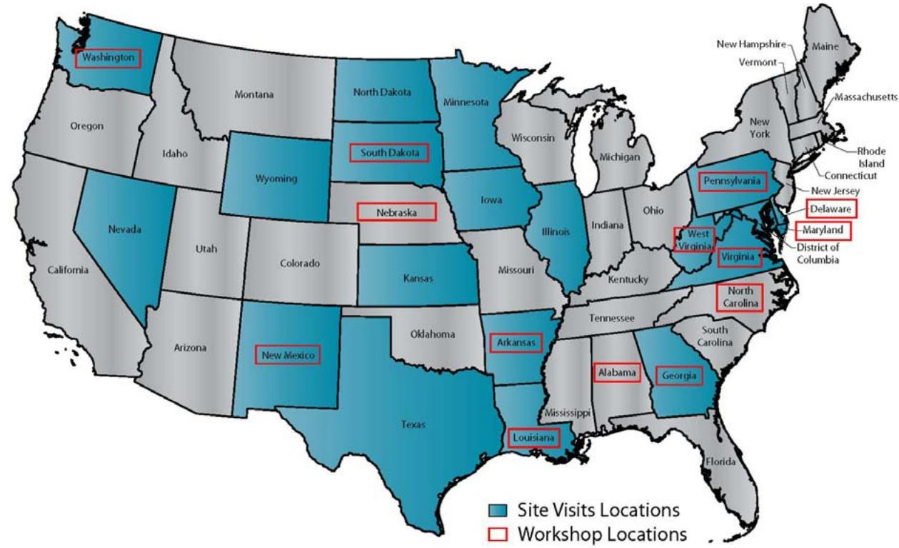
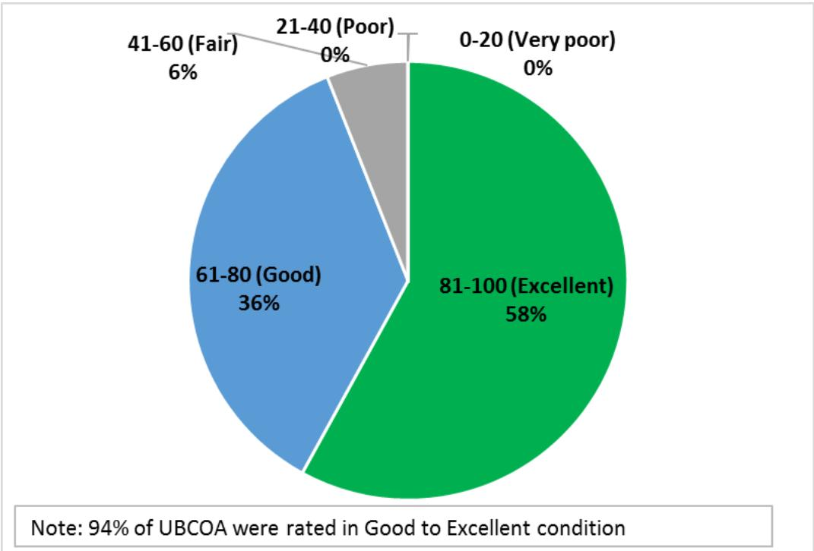
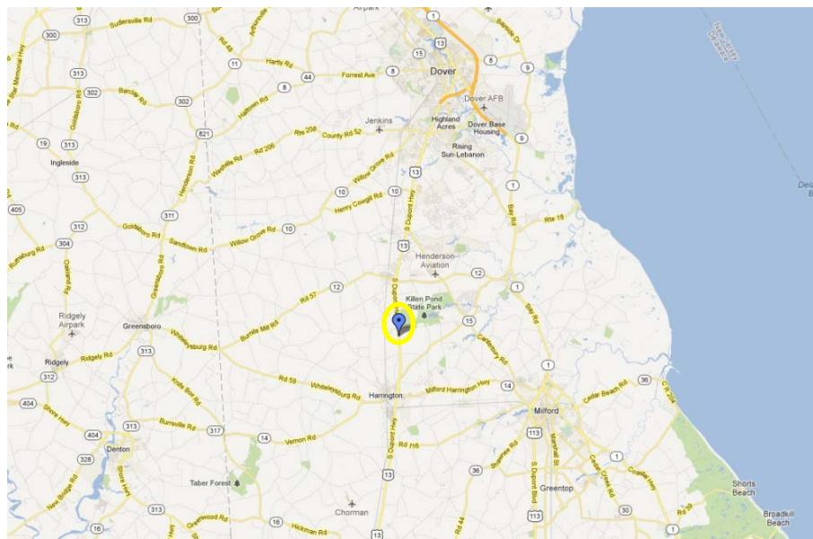
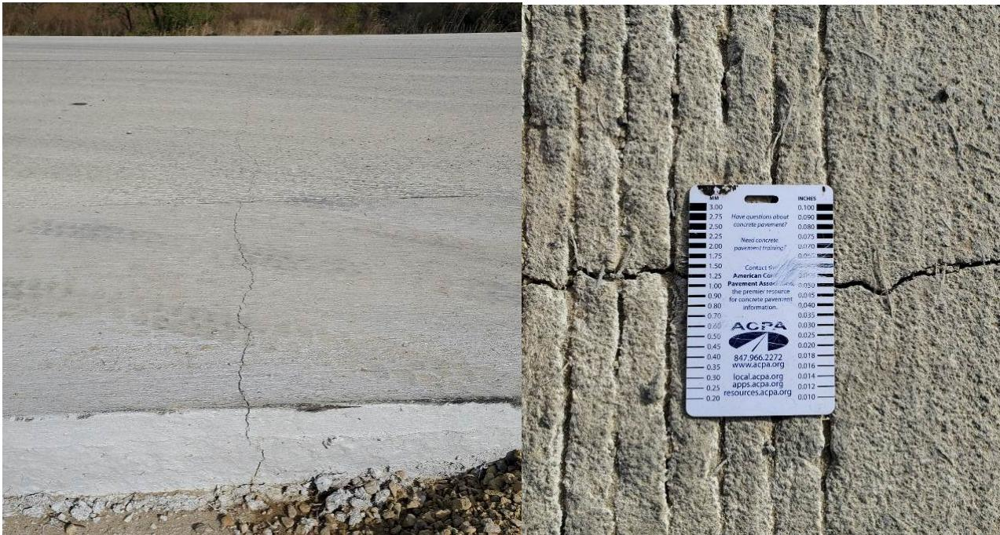
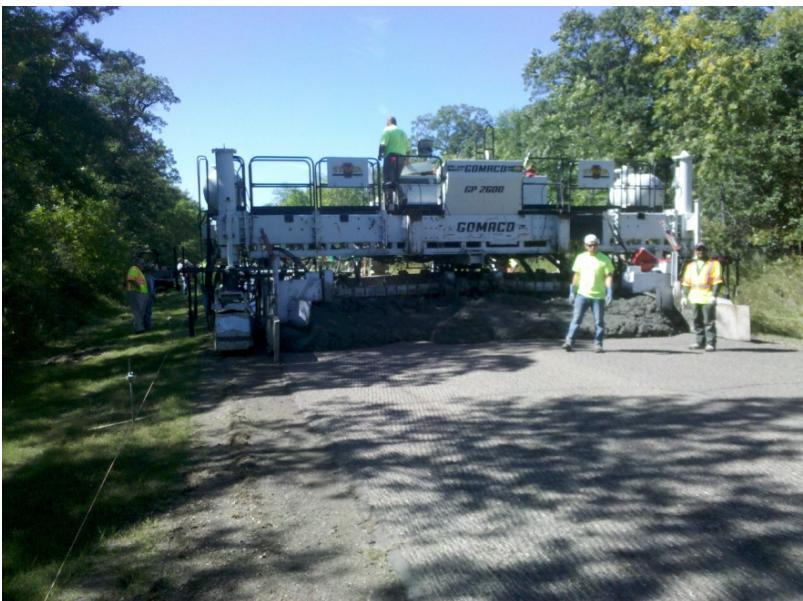

Concrete Overlay
Concrete overlay is a structural rehabilitation technique grouped under Preservation & Rehabilitation, serving as a specific measure to restore load-bearing capacity by placing a new layer of Portland cement concrete over an existing deteriorated pavement [12]. This method is selected when increased traffic loadings necessitate additional structural support for aging infrastructure [12], thereby extending the service life of the original pavement to maintain equity and sustainability without requiring complete reconstruction [12]. A pavement rehabilitation technique in which a new portland cement concrete (PCC) layer is placed over an existing pavement (concrete, asphalt, or composite) to strengthen the structure and/or improve the driving surface, concrete overlays have been used successfully in the US since 1913. They offer sustainability (100% recyclable), asset management (fully utilizing existing pavements), economics (competitive with alternatives), and maintenance of traffic (construction without full road closure). Concrete overlays are categorized primarily by the bond condition of the new portland cement concrete layer relative to the existing pavement, distinguishing bonded types like BCOA and BCOC from unbonded variants such as UBCOA and UBCOC which utilize a Geotextile Bond Breaker.
Sources (14)
Sub-concepts (8)
Overview and Overlay Types
Pavement rehabilitation can be achieved through bonded or unbonded overlays.
Concrete Overlay encompasses Bonded Concrete Overlay on Concrete (BCOC) as a specific structural configuration where the new concrete layer is chemically and mechanically bonded to the existing pavement surface. This classification distinguishes bonded applications from unbonded options, which typically utilize separation layers such as asphalt [1].
Concrete overlay is a rehabilitation technique that involves placing a new concrete layer over an existing pavement without full-depth removal [11]. Thin whitetopping is a specific type of concrete overlay designed for this purpose, often utilizing partial bonding between the new concrete and the underlying asphalt to enhance structural performance [8]. This method allows for the construction of economical pavements by incorporating variables such as overlay thickness and slab dimensions into mechanistic design procedures [8].
Virginia has utilized unbonded overlays as thick as 7 inches over existing pavements in marginal condition, treating the underlying structure as a subbase layer separated by flexible interlayers such as drainable or dense graded asphalt [1].
Unbonded Concrete Overlay on Asphalt is a type of concrete overlay that utilizes a stress-absorbing membrane interlayer to mechanically decouple the new Portland cement concrete slab from the underlying asphalt pavement. This unbonded configuration allows for the extension of pavement life by providing a longer-lasting alternative to traditional asphalt overlays [6]. In practice, such overlays may be designed with specific thicknesses and slab dimensions distinct from bonded alternatives or full-depth reconstructions [1].
Concrete Overlay encompasses Unbonded Concrete Overlay on Concrete (UBCOC) as a specific structural configuration where the new concrete layer is separated from the existing pavement by an isolation interface. This unbonded approach involves placing a new concrete slab over an existing pavement structure with a separation layer, such as an asphalt membrane, to prevent bonding between the layers [1].
For thin bonded concrete overlays on asphalt (BCOA), faulting is generally not a significant issue, as only 9% of projects contain more than 40 faulted joints per mile and the majority of existing faults are low severity [2].
This suggests that joint spacing optimization may be less critical for preventing faulting in BCOA compared to other overlay types [2].
Analytical investigations indicate that thin concrete overlays (4-inch to 6-inch) on existing asphalt pavement are predicted to serve longer before reaching the established International Roughness Index (IRI) performance threshold compared to unbonded concrete overlays on existing concrete pavement [3].
Historically, thin bonded concrete overlays on asphalt (BCOA) were often not designed with anticipation of bonding despite their designation; for example, a majority of 6-inch thick overlays were constructed without specific bonding design intent [2].
This highlights a distinction between classification by thickness and actual structural behavior assumptions [2].
Design Considerations For Joints And Soil
Design must account for existing expansion joints and soil movement areas, as failure to do so can lead to distress such as broken corner slabs in the new overlay [4]; Furthermore, bridging or reinforcement over existing working cracks should be incorporated into the overlay design to prevent stress transfer from the underlying pavement [4].
While the Bonded Concrete Overlay of Asphalt Mechanistic-Empirical (BCOA-ME) design procedure provides an overlay thickness based on design parameter inputs and includes an input variable for fiber type and content, it does not model predicted performance [3].
Pervious Concrete Overlays
Portland cement pervious concrete overlays exhibit high infiltration rates ranging from 230 to 3,000 inches per hour [5], providing sufficient capacity to remove stormwater immediately and prevent surface ponding [5]. Field infiltration testing confirms these effective drainage capabilities for mitigating hydroplaning and splash-and-spray, revealing that lateral water migration occurs across distances of six to seven feet within two to fifteen minutes [5].
To optimize these materials, air entrainment in pervious concrete overlays improves workability and durability by modifying the void structure, with the RapidAir test serving as an effective measurement method for the entrained air void system [5]. Furthermore, gyratory compaction testing provides a quantifiable method to characterize the workability and compactibility of pervious concrete, replacing ineffective slump tests for slip-form placement mixtures [5].
Field Application Programs and Performance Data
The FHWA-sponsored Concrete Overlay Field Application Program conducted 26 site visits in 18 states, constructed overlays in 9 states, and developed comprehensive lessons learned across project evaluation, design, specifications, construction sequence, and construction practices [1]. Key findings from this program include the use of coring and FWD for evaluation, choosing overlay type based on pavement conditions, providing positive drainage for unbonded overlay interlayers in non-arid climates, using cubic yard + square yard payment items, and correcting cross-slope by varying concrete thickness rather than bond breaker depth [1]. As of 2009, approximately 1,000 miles of concrete overlay were in use across Iowa. The TR-600 report wiegand-2010-improving-concrete-overlay-construction documented four overlay projects in Osceola, Worth, Poweshiek, and Johnson counties, which ranged from 5.0 to 6.0 inches in thickness [1].
The following figure illustrates the geographic distribution of these activities by showing the states where concrete overlay workshops were held or site visits were conducted.

Map of the United States showing states where concrete overlay workshops were held and site visits were conducted. [1]The figure displays a map of the United States highlighting specific states in blue to indicate ‘Site Visits Locations’ and marking others with red boxes for ‘Workshop Locations’. This visualizes the geographic distribution of activities from the FHWA-sponsored Concrete Overlay Field Application Program, which conducted site visits in states such as Delaware, Pennsylvania, and South Dakota.
Long-term performance data from Iowa demonstrates that concrete overlays frequently exceed the expected 20-year service life, with a majority of projects projected to maintain a Pavement Condition Index (PCI) of 60 or higher for up to 35 years [2]. Traffic volume has minimal impact on the performance determination of concrete overlays, as 87% of surveyed projects carry 2,000 vehicles per day or less and primarily serve secondary roads [2]. Poorer-performing overlays typically account for less than 5% of total databases and are primarily caused by structural failure or moisture-related distress, necessitating targeted design improvements [2]. Field reviews of Iowa overlays indicate that 12-foot joint spacing does not inherently cause poorer performance compared to other designs; instead, inferior outcomes are typically attributed to material-related distresses, deficient thickness, or inadequate system drainage [2].
The following figure illustrates the long-term Pavement Condition Index performance of these Iowa concrete overlays across various joint spacing configurations.
 Joint spacing (PCI vs. Age) [2]
Joint spacing (PCI vs. Age) [2]
The figure displays the long-term performance history of Iowa concrete overlays by plotting Pavement Condition Index (PCI) against age for four different transverse joint spacing configurations: 5.5-6 ft, 12 ft, 15 ft, and 20 ft. The data indicates that overlays with narrower joint spacing (5.5-6 ft) maintain higher condition ratings over time compared to wider spacings, such as the 12-ft design which shows a rapid decrease in PCI.
Technical monitoring and structural analysis provide further insight into overlay behavior. Field monitoring using faultmeters can track joint opening and faulting changes over time, with data typically normalized to a standard temperature of 70°F for consistent comparison across different survey periods [6]. Regarding structural response, the total backcalculated effective thickness values at conventional bonded and unbonded overlay sites exceeded the design concrete overlay thickness by large margins, from 3.9 in. to 6.0 in., indicating a significant contribution from the underlying layer [7]. Overlays deliberately debonded from underlying pavement layers experienced higher average deflection values (approximately 7.9 mils) and lower effective thickness contributions compared to overlays that achieved incidental bonding with asphalt [7].
Long-term performance data indicates that well-constructed concrete overlays can achieve a pavement condition index (PCI) of 60 at approximately 45 years of age, extending the service life by nearly two decades compared to pavements experiencing premature deterioration. [2]
The figure below illustrates the PCI ratings observed in UBCOA projects.

Pie chart showing the distribution of PCI ratings for UBCOA projects. [2]The figure displays a pie chart detailing the Pavement Condition Index (PCI) ratings specifically for Unbonded Concrete Overlay on Asphalt (UBCOA).
In Delaware, bonded concrete overlays have been applied over composite pavement sections where the original PCCP was at least 50 years old and had received numerous asphalt overlays, with design procedures following AASHTO 1993 or M-E Design Guide standards [1].
The following figure illustrates the approximate location of a bonded concrete overlay on US-13 in Delaware.

Map showing the approximate location of a bonded concrete overlay project on US-13 near Dover, Delaware. [1]The figure displays a map pinpointing the specific geographic location of a bonded concrete overlay project implemented by DelDOT on US-13 in Delaware.
Planning For Extensive Full-Depth Repairs
When more than 20 percent of transverse joints in a project have been patched with full-depth repairs or are expected to require such patches, thin concrete overlay rehabilitation should not be considered; instead, an unbonded overlay of significant thickness (6 inches or greater) or complete removal and replacement is recommended [8]. Furthermore, field review guidelines specify that if more than 20 percent of transverse cracks between PCC joints are “tented” upwards, thin overlays will likely fail because it indicates deteriorated concrete with no load transfer or ineffective reinforcement [8]. Planning also involves FWD deflection testing, which should be performed at 0.2-mile intervals in the outer wheel path with sensors placed between surface cracks rather than across reflective cracks [8]. While FWD testing frequencies of 1.0 mile per lane are sufficient for general overlay design, 0.1 to 0.5-mile intervals help isolate specific areas of moderate to severe distress [9], and a FWD load of 9 kips is recommended as it provides deflection data well-suited specifically for pavement overlay design purposes [9]. Additionally, pavement surface mapping for design purposes is most effective when conducted at 25-foot intervals, with 50-foot intervals serving as an alternative [9].
Regarding material performance, maturity testing can be used to monitor strength gain and facilitate early opening to traffic or construction vehicles for thin overlay sections [10], while Ultrasonic pulse velocity (UPV) measurements can quantify paste quality loss (PQL) as early as the 28th day to predict concrete soundness and timing of maintenance interventions [11]. In terms of strength milestones, flexural strengths of 350 psi are typically achieved within less than 24 hours, allowing temporary access to be restored one day after construction [9], and a flexural strength of 500 psi is reached in under 48 hours, which permits the commencement of shoulder construction activities [9].
Surface Preparation and Bond Breakers
Consequently, surface preparation—including milling for cross-slope correction and full-depth patching—and bond breaker layer selection (HMA vs. geotextile) are critical components of the process.
Bonded Concrete Overlay on Asphalt is a type of concrete overlay that utilizes chemical bonding agents or surface roughening to create a monolithic structural composite with the underlying asphalt layer. This bonded interface allows the layers to act together under load, enhancing joint load transfer efficiency and contributing to the overall structural performance of the system [7]. The effectiveness of this monolithic behavior is often assessed by comparing backcalculated effective thickness values against design expectations, as unbonded conditions result in structural responses that do not reflect the combined layer properties [7].
A concrete overlay system incorporates a geotextile bond breaker as an interlayer to mechanically separate the existing pavement from the new concrete slab [9]. This fabric is designed with sufficient weave and thickness to absorb mortar from above while preventing it from passing through, thereby ensuring that the material adheres only to the overlay concrete and not to the original pavement layer [9].
The Iowa Direct Shear Method serves as the standardized laboratory protocol for quantifying the interfacial bond strength between an existing concrete substrate and a new Concrete Overlay. This procedure involves applying parallel shear force to push one layer off another on a concrete core, with testing conducted in accordance with Iowa Department of Transportation Office of Materials Test Method 406-C [6]. The method is utilized to evaluate bond performance at various stages, including immediately after construction and throughout the research period, ensuring critical overlay depths are assessed [6].
When overlaying existing brick streets, ultrathin PCC overlays are preferred over asphalt because they mitigate failure modes caused by the flexibility of asphalt materials under heavy truck traffic [10].
Dowel And Tie-Bar Durability Requirements
The durability of dowels, tie-bars, and joints in concrete pavements is critical for long-life performance, requiring corrosion-proof materials and advanced construction techniques [12]. Fiber reinforcement can be introduced into the concrete mix using a hopper system that blows synthetic fibers directly into the mixing drum, with specific application rates such as one pound of monofilament per cubic yard or three pounds of fibrillated polypropylene and structural fibers per cubic yard [6]. Macrofibers used in concrete overlays are typically 1 to 2 inches in length, 0.02 to 0.04 inches in diameter, and dosed at rates of 0.2% to 1.0% by volume or greater [7]. Fibers present in developing cracks work to bridge the cracks, carrying tensile stresses and absorbing energy to slow crack propagation, which contributes primarily to bending/flexure residual strength [7]. While the addition of non-metallic fibers does not influence the chloride permeability or density of concrete, bond strength between overlay and old concrete can exceed the tensile strength of the existing material [11].
Material optimization further influences performance; for instance, substituting 40% by weight of Type I portland cement with grade 100 minimum ground granulated blast furnace slag (GGBFS) decreases overall permeability and reduces early-age internal stresses from excessive heat [11]. For time-sensitive rehabilitation projects, accelerated concrete mixtures utilizing 677 lb/yd³ of portland cement, 75 lb/yd³ of class F fly ash, and an accelerating admixture can facilitate early opening to traffic [1]. Additionally, internal curing using saturated lightweight fine aggregate (LWFA) improves concrete hydration for approximately one month after placement, which reduces early-age cracking and decreases slab warping by mitigating moisture gradients [13]. The use of internally cured concrete with LWFA also reduces permeability and improves resistance to environmental attack by enhancing the microstructure of the cement paste and the interfacial transition zone [13]. This internal curing is particularly beneficial for mixtures with a water-to-cement ratio lower than 0.42, where the risk of desiccation is high and external water cannot easily penetrate into the concrete [13].
The use of structural macrofibers in concrete overlays enhances fatigue capacity and fracture toughness while reducing design thickness requirements; additionally, fibers help control differential slab movement caused by curling and warping and hold cracks tightly together [2].
For unbonded concrete overlays less than 3.5 inches thick, the inclusion of fibers is critical for maintaining construction depth control and ensuring reliable performance [10].
In Iowa, experimental test sections constructed within bonded concrete overlays have utilized synthetic macro-fibers at a dosage rate of 4 lb/yd³ to evaluate the impact of fiber reinforcement on joint activation behavior and optimize transverse joint spacing [3].
Joint Spacing and Activation Mechanics
For normal concrete mixes, transverse and longitudinal joint spacing should not exceed twice the overlay depth in feet, though larger spacing may be considered when specific fiber types are used [10], and matching expansion joints in existing pavement for thin overlays is a consideration. The ratio of slab length to radius of relative stiffness (L/ℓ) serves as an effective indicator for optimizing joint spacing in thin overlays, with a target range between 4 and 7 providing the best balance between timely joint activation and structural performance [3]. Overlay sections with shorter (5.5 ft or 6 ft) joint spacing designs had a higher joint LTE than sections with joint spacing designs of 11 ft or greater, and several of these differences were statistically significant [7].
The following figure illustrates a common distress pattern observed in such overlays.

Close-up view of a transverse crack in a joint-free fiber-reinforced concrete overlay with an ACPA crack width gauge. [7]The figure displays a close-up of a transverse crack within a “joint-free FRC overlay” (fiber-reinforced concrete), which is a specific type of bonded concrete pavement overlay.
MIRA ultrasonic shear-wave tomography enables nondestructive measurement of joint activation in existing 4-inch to 6-inch overlays, revealing that un-activated joints are primarily confined to short slab sections (5.5- to 6-foot) within the first two years of service life [3]. While fiber reinforcement at a dosage of 4 lb/yd³ does not significantly alter joint activation behavior, it is utilized to increase fatigue capacity and ductility in thin overlays [3].
The figure below illustrates how joint activation percentages vary with different spacing configurations in these 6-inch thick overlays.
 Pie chart showing the percentage of activated joints in a concrete overlay. [3]
Pie chart showing the percentage of activated joints in a concrete overlay. [3]
This data supports the source context’s claim that “most of the joints were activated in overlays more than 10 years old,” illustrating the effectiveness of joint activation in existing concrete pavement overlays.
Overlay Placement Over Brick Streets
PCC overlays can be successfully placed over existing brick street surfaces by removing the asphalt layer and air-blasting the bricks to allow concrete penetration up to one-half inch between the top layer of bricks [10]. During construction, factors such as longitudinal joint alignment (GPS-controlled sawing vs. manual slab splitting), machine control (stringline vs. stringless/GPS), opening strength determination via maturity testing, traffic control during single-lane staged construction, and temperature differential management between existing pavement and overlay (minimum 65°F mix temperature in cool weather) must be addressed. To optimize efficiency, longitudinal joint-forming knives attached to slip-form pavers can create weakened joints in the fresh concrete, eliminating the need for subsequent mechanical sawing and reducing construction time [6].
In the construction of concrete overlays, transverse and longitudinal joint spacing should not exceed twice the overlay depth in inches for normal mixes, although larger spacings are permissible when specific fiber types are used [10].
Working centerline joints cannot be bridged with concrete up to 4.5 inches deep without expecting some reflective cracking, as observed in a 6-foot wide panel that bridges the centerline during the first year of service [6].
To maintain uniform overlay depth and reduce concrete requirements, entire asphaltic concrete surfaces are milled using computer models based on nine-shot cross sections taken at 50-foot intervals along the existing surface [1].
During construction, to protect underlying brick surfaces, concrete loads should be reduced to 6 cubic yards and trucks must avoid driving on exposed bricks until the overlay is placed [10].
The maturity concept can be utilized to monitor strength gain in thin PCC overlays, enabling earlier opening to traffic and construction vehicles [10].
Iowa has also successfully executed one-lane PCC overlay paving under active traffic using stringless robotic milling and slipform pavers, which reduced concrete quantity overruns from 126% on plans to 104% in actual placement [1].
The following figure illustrates a concrete overlay construction project near Devils Lake, ND.

Concrete Overlay Construction Near Devils Lake, ND [1]The image depicts a large slipform paver actively placing a new layer of concrete over an existing road surface. This scene illustrates the construction phase of a bonded concrete overlay, which is explicitly identified in the source context as being designed and scheduled for construction near Devils Lake, ND.
Two-Lift Construction Methods
In North Dakota, two-lift pavements were successfully constructed from a single batch plant by utilizing separate aggregate bins for each layer, where base material alone formed the bottom lift while rock and sand were combined for the top lift [14].
This method achieved successful bonding between layers without requiring multiple plants [14].
Material Enhancements and Interlayers
Regarding pavement construction, the Iowa US 75 project demonstrated that air entrainment content requires minimal adjustment when adding recycled asphalt to the base course, as very little additional air entrainment agent was necessary, and the pavement edges were capped by placing a 24-foot-wide top lift over a 23-foot-wide bottom lift [14].
Unbonded Concrete Overlay is a specific structural implementation of concrete overlay where a new concrete layer is placed over an existing pavement with a stress-relief interlayer to prevent composite action. This approach was historically utilized in early applications, such as a 1992 project that featured a six-inch Portland cement concrete layer atop a three-inch asphaltic concrete overlay [4]. The structural design of these overlays relies on precise predictions of loading stresses, accounting for the viscoelastic behavior of the interlayer and its interaction with the underlying pavement system [8].
Case Studies and Regional Applications
Various two-lift systems have been implemented for specialized engineering goals.
The North Dakota project on U.S. Highway 2 utilized a specific geometric design where the top lift was paved 27 feet wide over a 25-foot-wide bottom lift to accommodate widening requirements within the same construction pass [14].
In Washington state, two-lift paving was proposed as a solution to rutting from studded tires by varying flexural strengths between lifts; test sections showed that 900 psi concrete resisted wear significantly better than lower strength variants, an approach that allows agencies to use the same plant and aggregates while adjusting only the top lift mix design [14].
In Florida, econocrete test sections constructed in 1978 utilized a two-lift system where the lower lift had reduced flexural strength and the top lift possessed higher flexural strength, a roadway that remains in service today and validates the long-term performance of varying concrete strengths within a single pavement structure [14].
See also
- Preservation & Rehabilitation
- Bonded Concrete Overlay on Asphalt (BCOA)
- Bonded Concrete Overlay on Concrete (BCOC)
- Composite Pavement
- Geotextile Bond Breaker
- Iowa Direct Shear Method
- Thin Whitetopping
- Unbonded Concrete Overlay on Asphalt (UBCOA)
- Unbonded Concrete Overlay on Concrete (UBCOC)
- Unbonded Concrete Overlay
References
- G. Fick and D. Harrington, "Concrete Overlay Field Application Program, Final Report: Volume I," National Concrete Pavement Technology Center, Ames, IA, 2012. [Online]. Available: https://apps.itd.idaho.gov/apps/manuals/Materials/Materials%20References/OverlayFieldAppFinalReport.pdf
- J. Gross, D. King, D. Harrington, H. Ceylan, Y. A. Chen, S. Kim, P. Taylor, and O. Kaya, "Concrete Overlay Performance on Iowa's Roadways (Field Data Report)," National Concrete Pavement Technology Center, Ames, IA, Rep. TR-698, 2017. [Online]. Available: https://www.intrans.iastate.edu/wp-content/uploads/2017/09/Iowa_concrete_overlay_performance_w_cvr.pdf
- J. Gross, D. King, H. Ceylan, Y. A. Chen, and P. Taylor, "Optimized Joint Spacing for Concrete Overlays with and without Structural Fiber Reinforcement," National Concrete Pavement Technology Center, Ames, IA, Rep. TR-698, 2019. [Online]. Available: https://www.intrans.iastate.edu/wp-content/uploads/2019/06/optimized_joint_spacing_for_overlays_w_cvr.pdf
- J. K. Cable, M. L. Anthony, F. S. Fanous, and B. M. Phares, "Evaluation of Composite Pavement Unbonded Overlays: Phases I and II," Center for Portland Cement Concrete Pavement Technology, Iowa State University, Ames, IA, Rep. TR-478, 2003. [Online]. Available: https://www.intrans.iastate.edu/research/completed/evaluation-of-composite-pavement-unbonded-overlays-phase-iii-tr-478-hr-1093-proj-2/
- V. R. Schaefer and J. T. Kevern, "An Integrated Study of Pervious Concrete Mixture Design for Wearing Course Applications," National Concrete Pavement Technology Center, Ames, IA, 2011. [Online]. Available: https://www.intrans.iastate.edu/wp-content/uploads/2018/03/pervious_overlay_report_w_cvr.pdf
- J. K. Cable, J. L. Morud, and T. R. Tabbert, "Evaluation of Composite Pavement Unbonded Overlays: Phase III," CTRE, Iowa State University, Ames, IA, Rep. TR-478, 2006. [Online]. Available: https://rosap.ntl.bts.gov/view/dot/24065
- D. King, B. Yang, P. Taylor, and H. Ceylan, "Field Performance of Fiber-Reinforced Concrete Overlays," Institute for Transportation, Iowa State University, Ames, IA, Rep. TR-816, 2025. [Online]. Available: https://www.intrans.iastate.edu/wp-content/uploads/2025/05/field_performance_of_frc_overlays_w_cvr.pdf
- J. K. Cable, F. S. Fanous, H. Ceylan, D. Wood, D. Frentress, T. Tabbert, S. Y. Oh, and K. Gopalakrishnan, "Design and Construction Procedures for Concrete Overlay and Widening of Existing Pavements," Center for Portland Cement Concrete Pavement Technology, Iowa State University, Ames, IA, Rep. TR-511, 2005. [Online]. Available: https://www.intrans.iastate.edu/wp-content/uploads/2018/03/oreo_design.pdf
- P. D. Wiegand, J. K. Cable, T. Cackler, and D. Harrington, "Improving Concrete Overlay Construction," National Concrete Pavement Technology Center, Ames, IA, Rep. TR-600, 2010. [Online]. Available: http://publications.iowa.gov/20076/1/IADOT_tr_600_Improving_Concrete_Overlay_Construction_2010.pdf
- J. K. Cable and J. Williams, "Evaluation of Unbonded Ultrathin Whitetopping of Brick Streets," CTRE, Iowa State University, Ames, IA, Rep. TR-466, 2006. [Online]. Available: https://www.intrans.iastate.edu/wp-content/uploads/2018/03/whitetopping.pdf
- J. Grove, G. Fick, T. Rupnow, and F. Bektas, "Material and Construction Optimization for Prevention of Premature Pavement Distress in PCC Pavements," National Concrete Pavement Technology Center, Ames, IA, Rep. TPF-5(066), 2008. [Online]. Available: https://www.intrans.iastate.edu/wp-content/uploads/2018/03/mco-final.pdf
- D. Harrington, R. Rasmussen, D. Merritt, T. Cackler, and P. Taylor, "Long-Term Plan for Concrete Pavement Research and Technology—The Concrete Pavement Road Map (Second Generation): Volume II, Tracks (FHWA-HRT-11-070)," National Center for Concrete Pavement Technology, Iowa State University, Ames, IA, 2012. [Online]. Available: https://www.fhwa.dot.gov/publications/research/infrastructure/pavements/pccp/11070/11070.pdf
- A. Daghighi, P. Taylor, H. Ceylan, and Y. Zhang, "Impacts of Internally Cured Concrete Paving on Contraction Joint Spacing Phase II," National Concrete Pavement Technology Center, Iowa State University, Ames, IA, Rep. TR-746, 2021. [Online]. Available: https://www.cptechcenter.org/wp-content/uploads/2021/05/IC_concrete_paving_impacts_phase_II_field_impl_w_cvr.pdf
- J. K. Cable and D. P. Frentress, "Two-Lift Portland Cement Concrete Pavements to Meet Public Needs," Center for Transportation Research and Education, Iowa State University, Ames, IA, Rep. DTF61-01-X-00042 (Project 8), 2004. [Online]. Available: https://www.intrans.iastate.edu/wp-content/uploads/2020/10/two_lift.pdf
Feedback on this page